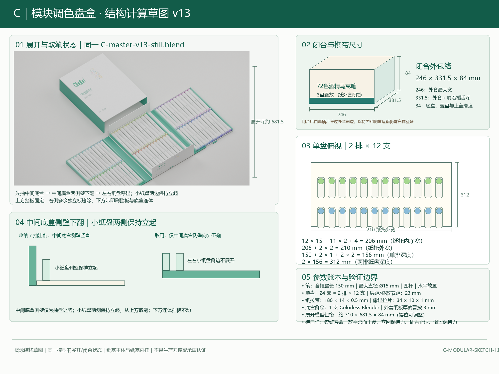
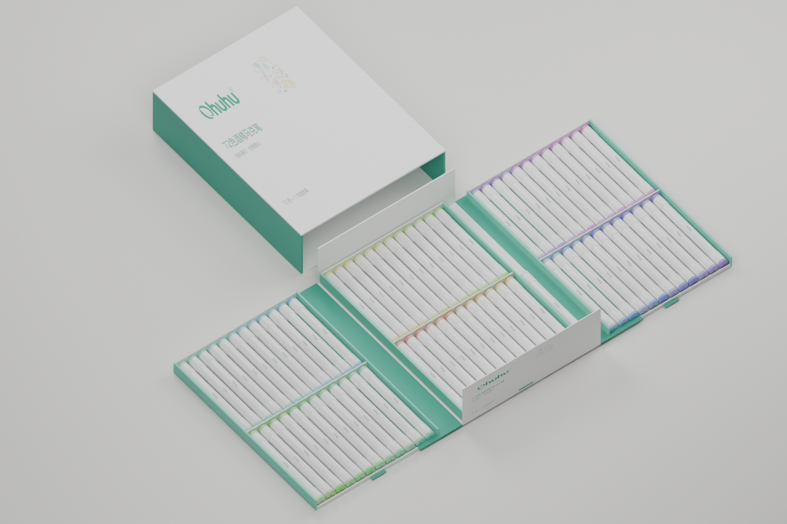
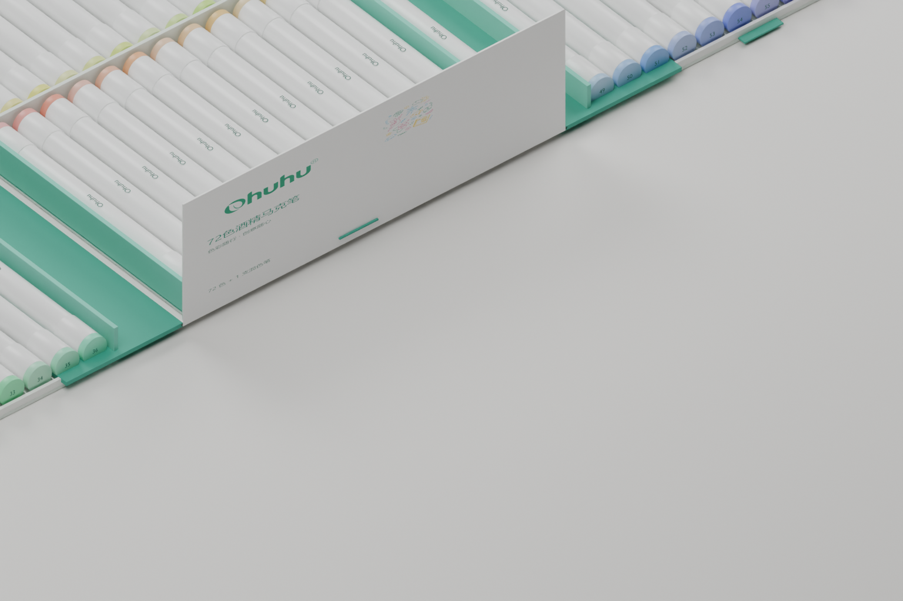

这一页只讲 C 方案的尺寸来源、展开占地和结构对应关系。数字是同一模型的概念计算值，不是已经完成纸板回弹与生产公差修正的刀线尺寸。

12 × 15 + 11 × 2 + 4 = 206 mm
12 支使用最大直径 Ø15 mm；11 个相邻间隔按 2 mm 计；整排两端合计余量为 4 mm。加上两侧各 2 mm 纸壁后：
206 + 2 × 2 = 210 mm（纸托外宽）
150 + 2 × 1 + 2 × 2 = 156 mm（单排深度）
2 × 156 = 312 mm（两排纸盘深度）
| 项目 | 概念计算/模型读数 | 用途 |
|---|---|---|
| 单盘外宽 | 210 mm | 确定盘体横向占位 |
| 单盘深度 | 312 mm | 确定抽拉方向和外套深度 |
| 单盘结构高度 | 底板 2 mm + 侧壁约 18 mm ≈ 20 mm | 确定单盘容纳高度 |
| 叠放节距 | 23 mm × 2 个层间 | 确定三盘相互避让 |
| 闭合外包络 | 246 × 331.5 × 84 mm | 来自同一 C-master.blend 的闭合状态 |
闭合尺寸包含外套、底盒、叠盘空间和闭锁前沿；不能直接当作生产刀线尺寸。
先抽出中间底盒，再把中间底盒两侧壁向外下翻，之后左右纸盘移到两侧；左右小纸盘两侧保持立起，从上方取笔。上方挡板保持固定；右侧多余独立板不设置；下方带印刷挡板与底盒连体。
左右纸盘移出后，最大横向展开宽约 710 mm
从外套后侧到最前方纸盘边缘，展开深约 681.5 mm
静态展开模型包络约 710 × 681.5 × 84 mm


本部分重点图：结构计算草图 v13。 01 至 05 与上面的公式使用同一套 C v13 模型数据。
中间纸盘留在底盒内，左右纸盘移到两侧；中间底盒两侧壁下翻后给纸盘抽出让路，小纸盘两侧保持立起。上方挡板不下翻，右侧没有多余独立板，下方带印刷挡板与底盒连体。
闭合外包络为 246 × 331.5 × 84 mm，包含外套、底盒、叠盘空间和闭锁前沿。
每盘 2 排 × 12 支。单排内净宽 206 mm，纸托外宽 210 mm，两排深度 312 mm。
收纳时侧壁竖直，取笔时中间底盒两侧壁向外下翻 90°，让左右纸盘脱离盒腔；左右小纸盘两侧保持立起，从上方取笔。下方固定挡板不参与下翻，只负责防滚。
150 mm 是含帽整笔长，Ø15 mm 是最大直径，笔轴全程水平；仍需白样回算纸板厚度、铰链回弹和保持力。